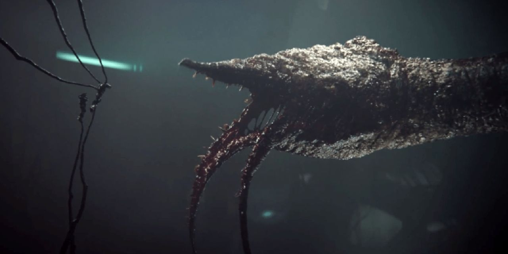

El Flood - El parasito de Halo
Orígenes del Flood
El Flood es una forma de vida parasitaria que representa una de las mayores amenazas en el universo de Halo. Su objetivo es infectar y consumir a otras especies, convirtiéndolas en parte de su horda.
El Flood fue descubierto por primera vez por los Forerunners, quienes intentaron contenerlo, pero su naturaleza invasiva y adaptativa lo convirtió en un enemigo formidable.
Tipos de Flood
Infectados
Los Infectados son las víctimas del Flood que han sido convertidas en formas de vida controladas por el parásito. Suelen ser humanos o especies alienígenas que han sido infectadas.
- Número estimado: Miles
- Mejoras: Fuerza y resistencia aumentadas
- Rol: Soldados del Flood, atacan en masa
- Éxitos notables: Participación en la guerra contra los Forerunners y la humanidad
Formas Arácnidas
Estas formas del Flood se caracterizan por su apariencia similar a arañas, utilizando rapidez y múltiples extremidades para atacar e infectar a sus presas.
- Número estimado: Desconocido
- Mejoras: Agilidad y capacidad táctica
- Rol: Ataques rápidos y desmembramientos
- Influencia: Aumentan la letalidad de la horda
El Gravemind
El Gravemind es la forma central del Flood, actuando como una inteligencia colectiva que controla a todas las formas del Flood. Es extremadamente inteligente y manipulador.
- Número estimado: 1 (único)
- Mejoras: Conocimiento de todas las formas del Flood
- Rol: Controlador y estratega del Flood
- Influencia: Manipula a sus enemigos y controla la horda
Comparación de Tipos de Flood
| Tipo | Rol | Número | Mejoras | Éxitos notables |
|---|---|---|---|---|
| Infectados | Soldados del Flood | Miles | Fuerza aumentada | Participación en la guerra contra los Forerunners |
| Formas Arácnidas | Ataques rápidos | Desconocido | Agilidad y letalidad | Aumento de la eficacia en combate |
| Gravemind | Controlador del Flood | 1 (único) | Conocimiento extenso | Manipulación de enemigos |
Línea de Tiempo del Flood
Descubrimiento del Flood
Los Forerunners descubren el Flood y su capacidad de infección.
Guerra contra los Forerunners
El Flood se convierte en una amenaza significativa para los Forerunners.
Infección de la humanidad
El Flood comienza a infectar a los humanos durante la guerra contra el Covenant.
Contención del Flood
Se implementan medidas para contener al Flood y evitar su expansión.
Impacto del Flood
El Flood ha tenido un profundo impacto en el universo de Halo:
- Militar: Su presencia ha cambiado el curso de la guerra en la galaxia.
- Tecnológico: Ha llevado a desarrollos en tecnología de contención y defensa.
- Social: Ha generado miedo y desesperación entre las especies afectadas.
- Ético: Su naturaleza parasitaria plantea preguntas sobre la moralidad de la guerra.
- Cultural: Ha inspirado historias de horror y supervivencia en el universo de Halo.
Aunque el Flood es una amenaza aterradora, también ha llevado a la unión de fuerzas en la lucha por la supervivencia.